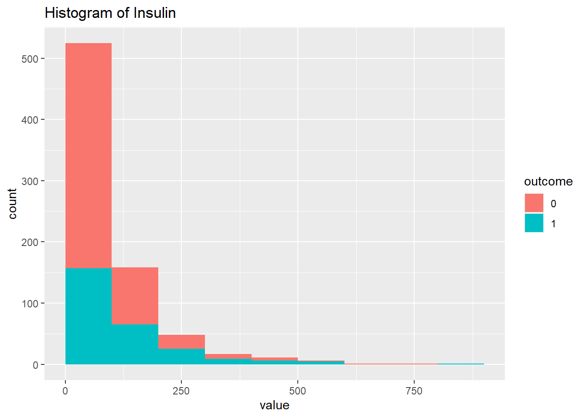
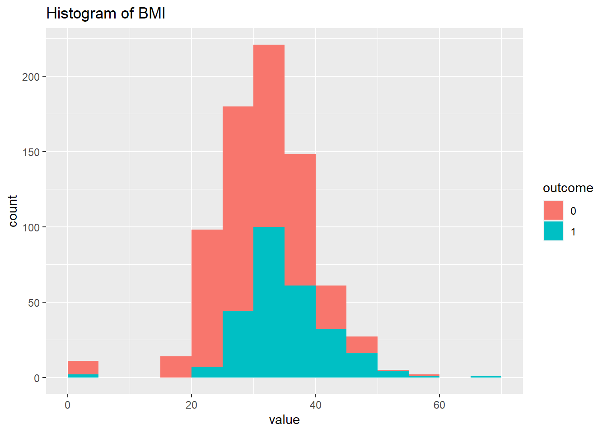
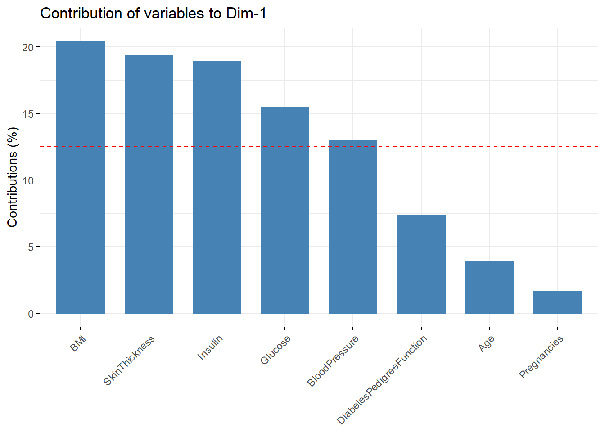

Los comentarios agregados se encuentran en cursiva y negrita para evidenciar los mismos.
Intro
Este sería un ejemplo de examen El siguiente conjunto de datos, consuste en predecir a pacientes basandonos en datos clínicos, si puede padecer diabetes o no.
Antes de cualquier método de clasificación, regresión o lo que sea, necesitamos explorar los datos.
Esto supone exámenes estadísticos inferenciales univariantes, bivariantes y multivariantes.
El análisis univariado: Examinará las características individuales de los datos clínicos.
El análisis bivariado: Ayudará a comprender la relación entre las diferentes características y la variable objetivo.
El análisis multivariante: Permitirá considerar simultáneamente varias características y evaluar su impacto en la predicción de la diabetes.
Estos análisis permiten tener una comprensión más profunda de los datos y su relación con la variable de interés.
Pima Indians Diabetes Database
This dataset is originally from the National Institute of Diabetes and Digestive and Kidney Diseases. The objective of the dataset is to diagnostically predict whether or not a patient has diabetes, based on certain diagnostic measurements included in the dataset. Several constraints were placed on the selection of these instances from a larger database. In particular, all patients here are females at least 21 years old of Pima Indian heritage.
Cargamos librerias
library(ggplot2)library(dplyr)
Attaching package: 'dplyr'
The following objects are masked from 'package:stats':
filter, lag
The following objects are masked from 'package:base':
intersect, setdiff, setequal, union
library(caret)
Loading required package: lattice
library(e1071)library(ggstatsplot)
You can cite this package as:
Patil, I. (2021). Visualizations with statistical details: The 'ggstatsplot' approach.
Journal of Open Source Software, 6(61), 3167, doi:10.21105/joss.03167
Cargamos los datos
datos <-read.csv("./datos/diabetes.csv")head(datos)
Si echamos una búsqueda rápida en google, observamos que el pedigree, es eso, la historia familiar de diabetes. Por lo tanto, aquí podríamso hacer varias cosas ! Entre ellas, regresar los datos a dicha función, o clasificar según esta variable, considerarla o no considerarla.
Para empezar vamos a considerarla para ver la clasificación del modelo knn y bayes.
La única variable que debemos de cambiar es Outcome a factor. Donde 1 es diebetes, y 0 es no diabetes.
La función as.factor() sirve para convertir la variable “Outcome” en un factor.
Esto significa que los valores de la variable “resultado” serán tratados como categorías o niveles en lugar de valores numéricos. Así, un valor de 1 indica la presencia de diabetes y un valor de 0 indica ausencia de diabetes.
datos$Outcome <-as.factor(datos$Outcome)
Análisis estadístico preliminar
Primero verificamos el tamaño de los datos usando la función dim(data).
Esta función devuelve el número de filas y columnas en un conjunto de datos. Los datos tienen 768 filas y 9 columnas.
dim(datos)
[1] 768 9
Tenemos 768 filas y 9 columnas. Analicemos primero dos a dos las variables una por una
Histogramas
Se crea una lista llamada l.plots para almacenar los gráficos de los histograma.
La variable n1 como el número de columnas del conjunto de datos menos uno (porque no queremos considerar la variable objetivo “Outcome”).
El bucle for para iterar sobre cada columna del conjunto de datos, excluyendo la variable “Outcome”
Se calcula para cada columna un histograma utilizando la función hist(), con el argumento plot establecido como FALSE para evitar que se muestre el histograma de inmediato.
datos.tmp es un nuevo marco de datos que contiene los valores de la columna actual y la variable Outcome.
Esta línea de código muestra los histogramas generados anteriormente. Ejecutarlo imprime una lista de histogramas l.plots para cada variable.
l.plots
[[1]]
[[2]]
[[3]]
[[4]]
[[5]]

[[6]]

[[7]]
[[8]]
En lo particular la variable del pedigree se me hace importante, entonces vamos a realizar gráficos de dispersión
En realidad, una buena práctica es correlacionar todas contra todas…
La función ggscatterstats(): Se utilizó para generar un gráfico de dispersión entre las variables “BMI” (Índice de masa corporal) y “DiabetesPedigreeFunction” (Función de pedigrí de diabetes).
El gráfico muestra la relación entre ambas variables y también proporciona la correlación y los intervalos de confianza.
Registered S3 method overwritten by 'ggside':
method from
+.gg ggplot2
`stat_bin()` using `bins = 30`. Pick better value with `binwidth`.
`stat_bin()` using `bins = 30`. Pick better value with `binwidth`.
Sin embargo, esto puede ser un proceso tedioso… imaginad hacer 16 gráficas ! podemos condersarlo todo.
Se realiza correlaciones entre las variables del conjunto de datos.
Para ello se realiza un análisis de correlación y se muestra el resultado en una matriz de correlación visual con la función corrplot::corrplot().
La función psych::corr.test() permite el análisis de correlación.
Se seleccionan las primeras n1 columnas del conjunto de datos (datos[,1:n1]) y se aplica el test de correlación.
Los valores de correlación y los valores p correspondientes se almacenan en la variable obj.cor.
Luego, se realiza un ajuste de los valores p para controlar el error por múltiples comparaciones. Los valores p de la matriz triangular superior e inferior se reemplazan por los valores de p ajustados utilizando obj.cor$p.adj.
Se establece en 1 la diagonal de la matriz de valores p para que los valores p entre la misma variable sean 1 (ya que no tiene sentido calcular la correlación entre una variable y sí misma).
Los valores de correlación se toman de obj.cor$r y los valores p ajustados se pasan a p.mat.
Se utiliza un nivel de significancia de 0.05 (sig.level = 0.05) y las etiquetas para los valores insignificantes se muestran en el gráfico (insig = “label_sig”).
Ahora podemos proceder a hacer algo similar, con una serie de comparaciones dos a dos sobre las medias o medianas, sobre cada variable y la variable de interés.
Primero debemos aplicar una regresión linear con variable dependiente cada variable numérica y por la categórica. Es decir un t.test pero con el fin de ver los residuos, para ver la normalidad de éstos.
Se realiza un análisis de normalidad de los residuos utilizando la prueba de Shapiro-Wilk.
Se aplica una regresión lineal para cada variable numérica en relación a la variable “Outcome” (diabetes) utilizando lm(x~datos$Outcome).
Luego, se calculan los residuos de cada regresión mediante:
summary(lm(x~datos$Outcome))$residuals.
La función apply() se utiliza dos veces para aplicar la prueba de Shapiro-Wilk a los residuos de cada regresión (shapiro.test).
Se utiliza apply(datos[,1:n1], 2, ...) para aplicar la función a cada columna del conjunto de datos `datos[,1:n1]`.
El resultado se almacena en p.norm , estos valores indican si los residuos se ajustan.
Con la función prcomp() se realiza un análisis de Componentes Principales (PCA).
Se seleccionan las primeras n1 columnas del conjunto de datos (datos[,1:n1]).
Los datos no se escalan (scale. = F) por la variabilidad de los datos.
Después de realizar el PCA, se obtienen los valores de las componentes principales (pcx$x) y se combinan con la variable “Outcome” del conjunto de datos (datos$Outcome) mediante la función bind_cols() para crear un nuevo conjunto de datos llamado plotpca.
Se utiliza ggplot() para generar un gráfico de dispersión de (PC1 y PC2) .
summary(datos)
Pregnancies Glucose BloodPressure SkinThickness
Min. : 0.000 Min. : 0.0 Min. : 0.00 Min. : 0.00
1st Qu.: 1.000 1st Qu.: 99.0 1st Qu.: 62.00 1st Qu.: 0.00
Median : 3.000 Median :117.0 Median : 72.00 Median :23.00
Mean : 3.845 Mean :120.9 Mean : 69.11 Mean :20.54
3rd Qu.: 6.000 3rd Qu.:140.2 3rd Qu.: 80.00 3rd Qu.:32.00
Max. :17.000 Max. :199.0 Max. :122.00 Max. :99.00
Insulin BMI DiabetesPedigreeFunction Age
Min. : 0.0 Min. : 0.00 Min. :0.0780 Min. :21.00
1st Qu.: 0.0 1st Qu.:27.30 1st Qu.:0.2437 1st Qu.:24.00
Median : 30.5 Median :32.00 Median :0.3725 Median :29.00
Mean : 79.8 Mean :31.99 Mean :0.4719 Mean :33.24
3rd Qu.:127.2 3rd Qu.:36.60 3rd Qu.:0.6262 3rd Qu.:41.00
Max. :846.0 Max. :67.10 Max. :2.4200 Max. :81.00
Outcome
0:500
1:268
pcx <-prcomp(datos[,1:n1],scale. = F) ## escalamos por la variablidad de los datosplotpca <-bind_cols(pcx$x,outcome=datos$Outcome)ggplot(plotpca,aes(PC1,PC2,color=outcome))+geom_point()
Ahora vamos a ver si haciendo unas transformaciones esto cambia. Pero antes debemos de ver las variables sospechosas…
Pero de igual manera podemos escalar a ver si hay algun cambio.
Se escalan los datos (`scale. = T`) antes de realizar el PCA.
summary(datos)
Pregnancies Glucose BloodPressure SkinThickness
Min. : 0.000 Min. : 0.0 Min. : 0.00 Min. : 0.00
1st Qu.: 1.000 1st Qu.: 99.0 1st Qu.: 62.00 1st Qu.: 0.00
Median : 3.000 Median :117.0 Median : 72.00 Median :23.00
Mean : 3.845 Mean :120.9 Mean : 69.11 Mean :20.54
3rd Qu.: 6.000 3rd Qu.:140.2 3rd Qu.: 80.00 3rd Qu.:32.00
Max. :17.000 Max. :199.0 Max. :122.00 Max. :99.00
Insulin BMI DiabetesPedigreeFunction Age
Min. : 0.0 Min. : 0.00 Min. :0.0780 Min. :21.00
1st Qu.: 0.0 1st Qu.:27.30 1st Qu.:0.2437 1st Qu.:24.00
Median : 30.5 Median :32.00 Median :0.3725 Median :29.00
Mean : 79.8 Mean :31.99 Mean :0.4719 Mean :33.24
3rd Qu.:127.2 3rd Qu.:36.60 3rd Qu.:0.6262 3rd Qu.:41.00
Max. :846.0 Max. :67.10 Max. :2.4200 Max. :81.00
Outcome
0:500
1:268
pcx <-prcomp(datos[,1:n1],scale. = T) ## escalamos por la variablidad de los datosplotpca <-bind_cols(pcx$x,outcome=datos$Outcome)ggplot(plotpca,aes(PC1,PC2,color=outcome))+geom_point()
La función factoextra::fviz_contrib() para visualizar las contribuciones de las variables a las componentes principales obtenidas en el PCA.
factoextra::fviz_contrib(pcx,"var")

Al parecer es la insulina la que está dando problemas.
Se quita la variable “Insulin” del conjunto de datos mediante la creación de un índice w que contiene los índices de las columnas que contienen “insulin” y el número total de columnas (ncol(datos)).
Luego, se seleccionan todas las columnas excepto las indicadas en el índice w para realizar el PCA sin escalar los datos nuevamente, utilizando datos [, -w] en la función prcomp().
## indices a quitarw <-c(grep("insulin",ignore.case = T,colnames(datos)),ncol(datos))pcx <-prcomp(datos[,-w],scale. = F) ## escalamos por la variablidad de los datosplotpca <-bind_cols(pcx$x,outcome=datos$Outcome)ggplot(plotpca,aes(PC1,PC2,color=outcome))+geom_point()
De hecho la insulina, tenía un aspecto raro, como sesgado, ver gráficos de arriba. Vamos a transformala.
Luego de la transformación, se realizó el PCA escalando los datos.
Utilizando scale. = TRUE en la función prcomp(). Luego, se generan los gráficos de dispersión de las dos primeras componentes principales.
Pregnancies Glucose BloodPressure SkinThickness
Min. : 0.000 Min. : 0.0 Min. : 0.00 Min. : 0.00
1st Qu.: 1.000 1st Qu.: 99.0 1st Qu.: 62.00 1st Qu.: 0.00
Median : 3.000 Median :117.0 Median : 72.00 Median :23.00
Mean : 3.845 Mean :120.9 Mean : 69.11 Mean :20.54
3rd Qu.: 6.000 3rd Qu.:140.2 3rd Qu.: 80.00 3rd Qu.:32.00
Max. :17.000 Max. :199.0 Max. :122.00 Max. :99.00
Insulin BMI DiabetesPedigreeFunction Age
Min. :-2.996 Min. : 0.00 Min. :0.0780 Min. :21.00
1st Qu.:-2.996 1st Qu.:27.30 1st Qu.:0.2437 1st Qu.:24.00
Median : 3.418 Median :32.00 Median :0.3725 Median :29.00
Mean : 1.008 Mean :31.99 Mean :0.4719 Mean :33.24
3rd Qu.: 4.847 3rd Qu.:36.60 3rd Qu.:0.6262 3rd Qu.:41.00
Max. : 6.741 Max. :67.10 Max. :2.4200 Max. :81.00
Outcome
0:500
1:268
pcx <-prcomp(datos[,1:n1],scale. = T) ## escalamos por la variablidad de los datosplotpca <-bind_cols(pcx$x,outcome=datos$Outcome)ggplot(plotpca,aes(PC1,PC2,color=outcome))+geom_point()
Cambia ! Esto significa que no hemos quitado la infromacion de la insulina, solamente lo hemos transformado
Es decir, cambia si transformamos los datos…a partir de esto, podemos realizar de nuevo pruebas de diferencia de medianas, pero ahora lo veremos condensado..
datos <-read.csv("./datos/diabetes.csv")datos$Outcome <-as.factor(datos$Outcome)datsc <-scale(datos[,-ncol(datos)])
Veamos las distribuciones de nuevo
La visualización de las distribuciones utilizando un bucle for. Se genera un histograma para cada variable y se almacena en una lista l.plots.
Curioso, los valores la insulina, han cambiado por la transformación en valor mas no la distribución, vamos a hacer unos arrelgos…
Al parecer la preñanza esta ligada a una esgala logaritmica de 2 Esto es otra cosa…
Se cargan los datos originales read.csv().
Se convierte la variable “Outcome” en un factor utilizando as.factor().
Después, se realiza una transformación logarítmica en la variable “Pregnancies” agregando 0.5 a cada valor antes de aplicar el logaritmo.
datos <-read.csv("./datos/diabetes.csv")datos$Outcome <-as.factor(datos$Outcome)datos$Pregnancies <-log(datos$Pregnancies+0.5)ggplot(datos,aes(Pregnancies))+geom_histogram(breaks =hist(datos$Pregnancies,plot=F)$breaks)
Realizaremos lo mismo con la grosura de la piel
datos <-read.csv("./datos/diabetes.csv")datos$Outcome <-as.factor(datos$Outcome)datos$SkinThickness <-log(datos$SkinThickness+0.5)ggplot(datos,aes(SkinThickness))+geom_histogram(breaks =hist(datos$SkinThickness,plot=F)$breaks)
Tenemos algo raro, lo más posible sea por la obesidad…
ggscatterstats(datos,SkinThickness,BMI)
`stat_bin()` using `bins = 30`. Pick better value with `binwidth`.
`stat_bin()` using `bins = 30`. Pick better value with `binwidth`.
Curioso ! al parecer los datos tienen valores nulos, los cuales solo están en las otras variables que no sean pregnancies. Vamos a quitarlos.
La función apply() junto con ifelse() reemplazan los valores nulos (0) en todas las columnas, excepto en las columnas “Pregnancies” y “Outcome”, con NA.
datos <-read.csv("./datos/diabetes.csv")datos[,-c(1,9)] <-apply(datos[,-c(1,9)],2,function(x) ifelse(x==0,NA,x))datos$Outcome <-as.factor(datos$Outcome)
Vamos a quitar estos valores
La función complete.cases() identifica las filas en el conjunto de datos donde no hay valores faltantes en ninguna columna.
datos <- datos[complete.cases(datos),]
Se redujo el data set a 392 observaciones…
La función table() para obtener la frecuencia de cada nivel en la variable “Outcome” del conjunto de datos actualizado.
table(datos$Outcome)
0 1
262 130
Se crea una lista l.plots vacía con una longitud igual al número de columnas en datos menos 1.
Se crea un nuevo data frame datos.tmp con las columnas “value” y “outcome”
“value” contiene los valores de la columna actual
“outcome” contiene los valores de la variable “Outcome”
ggplot() para crear un gráfico de histograma utilizando datos.tmp y se agrega a la lista l.plots en la posición correspondiente.
Con las anteriores transformaciones vamos a realizar el PCA de nuevo.
summary(datos)
Pregnancies Glucose BloodPressure SkinThickness
Min. :-0.6931 Min. :4.025 Min. : 24.00 Min. :2.646
1st Qu.: 0.4055 1st Qu.:4.595 1st Qu.: 62.00 1st Qu.:4.583
Median : 0.9163 Median :4.779 Median : 70.00 Median :5.385
Mean : 0.9590 Mean :4.778 Mean : 70.66 Mean :5.305
3rd Qu.: 1.7047 3rd Qu.:4.963 3rd Qu.: 78.00 3rd Qu.:6.083
Max. : 2.8622 Max. :5.288 Max. :110.00 Max. :7.937
Insulin BMI DiabetesPedigreeFunction Age
Min. :2.639 Min. :18.20 Min. :-2.4651 Min. :4.392
1st Qu.:4.341 1st Qu.:28.40 1st Qu.:-1.3103 1st Qu.:4.524
Median :4.832 Median :33.20 Median :-0.7996 Median :4.755
Mean :4.813 Mean :33.09 Mean :-0.8391 Mean :4.882
3rd Qu.:5.247 3rd Qu.:37.10 3rd Qu.:-0.3754 3rd Qu.:5.170
Max. :6.741 Max. :67.10 Max. : 0.8838 Max. :6.340
Outcome
0:262
1:130
pcx <-prcomp(datos[,1:n1],scale. = T) ## escalamos por la variablidad de los datosplotpca <-bind_cols(pcx$x,outcome=datos$Outcome)ggplot(plotpca,aes(PC1,PC2,color=outcome))+geom_point()
Ahora vamos a realizar las pruebas de medianas
Utilizando la función wilcox.test(): En cada variable transformada con respecto a la variable de resultado.
Los resultados de las pruebas se almacenan en el objeto p.norm.
Observamos que en una primera instancia ahora todas tienen diferencias significativas, esto tenemos que corregir.
Utilizando el método de Benjamini-Hochberg se realiza un ajuste de (p valor) para corregir el problema de la comparación múltiple.
p.adj <-p.adjust(p.norm,"BH")
Todas siguen siendo significativas, ahora vamos a ver cuales aumentan o disminyuen respecto las otras.
Utilizando la función split(): Se dividen los datos en grupos según la variable de resultado.
Se calculan las medianas de cada variable para cada grupo utilizando la función apply() y se almacenan en el objeto datos.median
Se crea un data frame llamado toplot que contiene las diferencias de medianas entre los grupos (calculadas restando las medianas de los grupos) y los p-valores corregidos.
Es decir, existen correlaciones únicas de la obesidad y no obesidad, y existen otras correlaciones que son debidas a otros factores.
Particion de datos
Partición de los datos en conjuntos de entrenamiento y prueba.
la función scale(), centra y escala cada variable para tener media cero y desviación estándar uno.
Utilizando la función levels() se cambian los niveles de la variable de resultado Outcome a “D” (diabetes) y “N” (no diabetes)
Un conjunto de entrenamiento mediante la función sample(), que selecciona aleatoriamente un subconjunto de filas del dataframe datos para formar el conjunto de entrenamiento.
El tamaño del conjunto de entrenamiento que representa el 70% de los datos.
Se ajusta un modelo de regresión logística utilizando la función glm().
Outcome ~ . dice que se utiliza la variable Outcome como la variable de respuesta y todas las demás variables como predictores.
family = “binomial” indica que se trata de un modelo de regresión logística.
La función predict() aplicada al modelo ajustado glm.mod. El argumento type = “response” especifica que se obtengan las probabilidades de pertenecer a la clase positiva (diabetes).
Estas probabilidades se convierten en etiquetas de clase utilizando un umbral de corte de 0.5 y se asignan a la variable predicción.
Confusion Matrix and Statistics
Reference
Prediction D N
D 66 22
N 11 19
Accuracy : 0.7203
95% CI : (0.6302, 0.799)
No Information Rate : 0.6525
P-Value [Acc > NIR] : 0.07178
Kappa : 0.342
Mcnemar's Test P-Value : 0.08172
Sensitivity : 0.8571
Specificity : 0.4634
Pos Pred Value : 0.7500
Neg Pred Value : 0.6333
Prevalence : 0.6525
Detection Rate : 0.5593
Detection Prevalence : 0.7458
Balanced Accuracy : 0.6603
'Positive' Class : D
LASSO
Se establece un único valor de alpha en 0
Se generan valores de lambda en el rango de 0 a 1 con un incremento de 0.001.
Se define el control de entrenamiento trainControl para realizar una validación cruzada repetida.
El método de validación cruzada “repeatedcv”, con 10 pliegues y 3 repeticiones.
classProbs = TRUE se establece para que se calculen las probabilidades de clase.
Se especifica el método “glmnet” para utilizar LASSO y se proporcionan los datos de entrenamiento dat.train.
Se realizan predicciones en el conjunto de prueba utilizando la función predict() aplicada al modelo model.
Las etiquetas predichas se comparan con las etiquetas reales dat.test$Outcome y se calcula la matriz de confusión utilizando la función confusionMatrix().
La función naiveBayes() se usa para ajustar el modelo Naive Bayes utilizando las variables seleccionadas.
La función predict() para realizar las predicciones en el conjunto de prueba dat.test[, -ncol(dat.test)], excluyendo la columna de la variable objetivo.
La función predict() para realizar las predicciones en el conjunto de prueba utilizando el modelo k-NN ajustado pasando como argumento el objeto knnFit y los datos de prueba.
knnPredict <-predict(knnFit,newdata = dat.test[,-ncol(dat.test)] )#Get the confusion matrix to see accuracy value and other parameter valuesconfusionMatrix(knnPredict, dat.test$Outcome )
Confusion Matrix and Statistics
Reference
Prediction D N
D 65 18
N 10 25
Accuracy : 0.7627
95% CI : (0.6756, 0.8362)
No Information Rate : 0.6356
P-Value [Acc > NIR] : 0.002176
Kappa : 0.4666
Mcnemar's Test P-Value : 0.185877
Sensitivity : 0.8667
Specificity : 0.5814
Pos Pred Value : 0.7831
Neg Pred Value : 0.7143
Prevalence : 0.6356
Detection Rate : 0.5508
Detection Prevalence : 0.7034
Balanced Accuracy : 0.7240
'Positive' Class : D
Ajuste del modelo PLS-DA utilizando la función train().
Lugo de ajustar el modelo PLS-DA, se realiza las predicciones en el conjunto de prueba utilizando la función predict() pasando como argumento el objeto plsda y los datos de prueba.
La función confusionMatrix() para calcular la matriz de confusión y obtener medidas de evaluación, como el área bajo la curva ROC.
library(caret)datos <-read.csv("./datos/diabetes.csv")datos$Outcome <-as.factor(datos$Outcome)datos[,1:n1] <-as.data.frame(scale(datos[,-ncol(datos)]))levels(datos$Outcome) <-c("D","N")train <-sample(nrow(datos),size =nrow(datos)*0.7)dat.train <- datos[train,]dat.test <- datos[-train,]set.seed(1001) ctrl<-trainControl(method="repeatedcv",number=10,classProbs =TRUE,summaryFunction = twoClassSummary) plsda<-train(x=dat.train[,-ncol(datos)], # spectral datay=dat.train$Outcome, # factor vectormethod="pls", # pls-da algorithmtuneLength=10, # number of componentstrControl=ctrl, # ctrl contained cross-validation optionpreProc=c("center","scale"), # the data are centered and scaledmetric="ROC") # metric is ROC for 2 classesplsda
Partial Least Squares
537 samples
8 predictor
2 classes: 'D', 'N'
Pre-processing: centered (8), scaled (8)
Resampling: Cross-Validated (10 fold, repeated 1 times)
Summary of sample sizes: 483, 484, 483, 483, 483, 483, ...
Resampling results across tuning parameters:
ncomp ROC Sens Spec
1 0.8183485 0.8468067 0.5657895
2 0.8348713 0.8667227 0.6181579
3 0.8346068 0.8814286 0.6023684
4 0.8342848 0.8756303 0.6076316
5 0.8338425 0.8784874 0.6023684
6 0.8336922 0.8784874 0.6023684
7 0.8336922 0.8784874 0.6023684
ROC was used to select the optimal model using the largest value.
The final value used for the model was ncomp = 2.
Se carga el archivo “diabetes.csv” utilizando la función read.csv
Se convierte la variable Outcome en un factor utilizando as.factor.
Se estandarizan las variables predictoras en datos[,1:n1] utilizando scale para que tengan media cero y desviación estándar uno.
Se asignan los niveles “D” y “N”
Se divide el dataframe datos en dos conjuntos: dat.train y dat.test.
dat.train contendrá las filas correspondientes a los índices en train
test contendrá las filas restantes.
Se establece una semilla aleatoria (set.seed(1001)).
ctrl especifica los detalles del control del entrenamiento, se utiliza el método de validación cruzada repetida con 10 pliegues y se utiliza la métrica de resumen twoClassSummary.
Se entrena un modelo PLS-DA utilizando la función train.
Se especifican:
x representa las variables predictoras (dat.train[,c(2,5,7,8)] selecciona las columnas 2, 5, 7 y 8 de dat.train)
y representa la variable de resultado (dat.train$Outcome)
metric establece la métrica de evaluación como el área bajo la curva ROC.
La matriz de confusión compara las predicciones con las verdaderas etiquetas del conjunto de prueba (dat.test$Outcome).
La matriz de confusión, incluye la precisión, la sensibilidad, la especificidad.
datos <-read.csv("./datos/diabetes.csv")datos$Outcome <-as.factor(datos$Outcome)datos[,1:n1] <-as.data.frame(scale(datos[,-ncol(datos)]))levels(datos$Outcome) <-c("D","N")train <-sample(nrow(datos),size =nrow(datos)*0.7)dat.train <- datos[train,]dat.test <- datos[-train,]library(caret)set.seed(1001) ctrl<-trainControl(method="repeatedcv",number=10,classProbs =TRUE,summaryFunction = twoClassSummary) plsda<-train(x=dat.train[,c(2,5,7,8)], # spectral datay=dat.train$Outcome, # factor vectormethod="pls", # pls-da algorithmtuneLength=10, # number of componentstrControl=ctrl, # ctrl contained cross-validation optionpreProc=c("center","scale"), # the data are centered and scaledmetric="ROC") # metric is ROC for 2 classesprediccion <-predict(plsda,dat.test[,c(2,5,7,8)])confusionMatrix(prediccion,dat.test$Outcome)
Confusion Matrix and Statistics
Reference
Prediction D N
D 136 42
N 9 44
Accuracy : 0.7792
95% CI : (0.7201, 0.831)
No Information Rate : 0.6277
P-Value [Acc > NIR] : 5.532e-07
Kappa : 0.4876
Mcnemar's Test P-Value : 7.433e-06
Sensitivity : 0.9379
Specificity : 0.5116
Pos Pred Value : 0.7640
Neg Pred Value : 0.8302
Prevalence : 0.6277
Detection Rate : 0.5887
Detection Prevalence : 0.7706
Balanced Accuracy : 0.7248
'Positive' Class : D
Finalmente podríamos hacer un análisis de la varianza multivariante.
La función adonis2 realiza un análisis de varianza multivariado (PERMANOVA) utilizando la disimilaridad definida por la distancia euclidiana.
library(vegan)
Loading required package: permute
This is vegan 2.6-4
Attaching package: 'vegan'
The following object is masked from 'package:caret':
tolerance
Permutation test for adonis under reduced model
Terms added sequentially (first to last)
Permutation: free
Number of permutations: 999
adonis2(formula = datos[, -ncol(datos)] ~ datos$Outcome, method = "euclidean")
Df SumOfSqs R2 F Pr(>F)
datos$Outcome 1 357.8 0.05831 47.434 0.001 ***
Residual 766 5778.2 0.94169
Total 767 6136.0 1.00000
---
Signif. codes: 0 '***' 0.001 '**' 0.01 '*' 0.05 '.' 0.1 ' ' 1
Es decir, como conlusión aunque las variables no pueden detectar la diabetes, siendo variables independientes, si por otro lado las consideramos dependientes de la diabetes.
Es decir, la diabetes es una condición en la que influye en los parámetros, mientras que es menos probable que la diabetes sea la causa de estas alteraciones, con una mejor precisón del 77 por ciento.
Es decir, por un lado tenemos las variables que nos explican solo un 77 porciento de la diabetes, mientras que la condición en sí nos separa más entre la media global.
Se podría investigar más esto. Por ejemplo, se podría hacer una correlación parcial, dada la diabetes, e identificar aquellas variables especificamente relacionadas con esta.
Curva ROC
Se utilizará la biblioteca pROC para ello instalarla con el siguiente código:
(install.packages("pROC"))
La curva ROC representa:
La relación entre la tasa de verdaderos positivos (sensibilidad)
La tasa de falsos positivos (1-especificidad) a medida que se varía el umbral de clasificación.
Pasos:
Ajustar el modelo de Regresión Logística
Obtener las probabilidades predichas para el conjunto de prueba
Crear la curva ROC
Graficar la curva ROC
library(pROC)
Type 'citation("pROC")' for a citation.
Attaching package: 'pROC'
The following objects are masked from 'package:stats':
cov, smooth, var
# Regresión Logísticaglm.mod <-glm(Outcome ~ ., data = dat.train, family ="binomial")# Probabilidades pred.prob <-predict(glm.mod, dat.test, type ="response")# Crear roc_obj <-roc(dat.test$Outcome, pred.prob)
Setting levels: control = D, case = N
Setting direction: controls < cases
# Graficar plot(roc_obj, main ="Curva ROC", xlab ="Tasa de Falsos Positivos", ylab ="Tasa de Verdaderos Positivos", col ="blue")